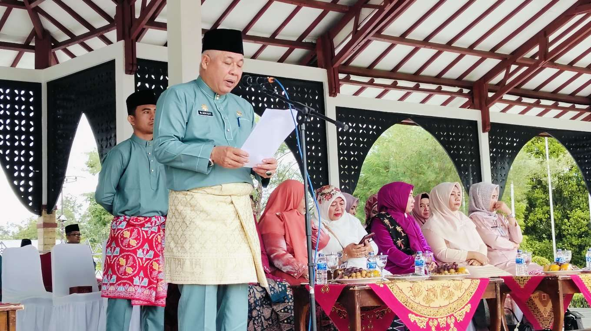
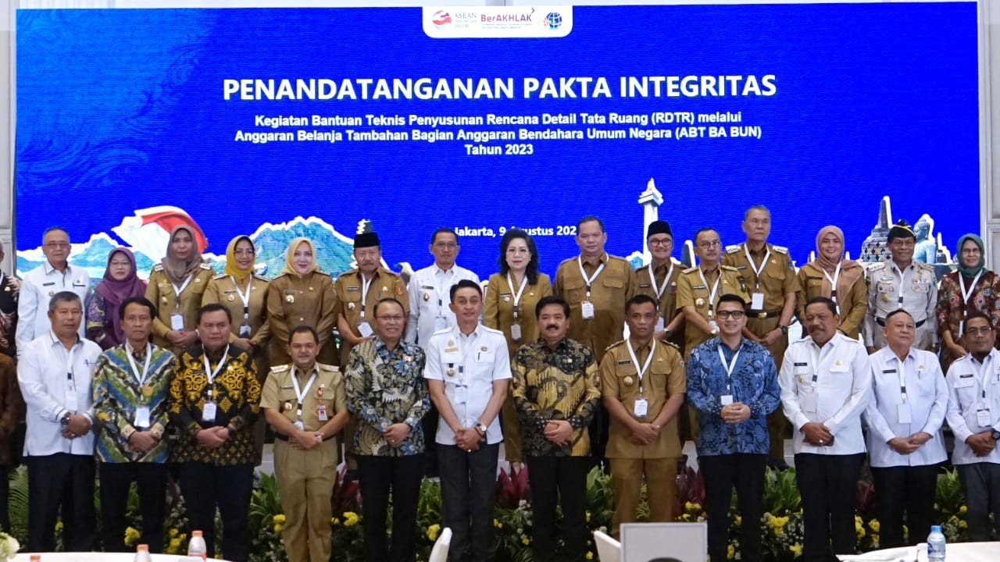

Dokumentasi Kegiatan

Pemkab Sarolangun Gelar Upacara Peringatan HUT Ke-68 Provinsi Jambi Tahun 2025
Pemerintah Kabupaten Sarolangun menyelenggarakan upacara peringatan Hari Ulang Tahun Ke-68 Provinsi Jambi pada Senin (06 Januari 2025) di Lapangan Gunung Kembang, Komplek Perkantoran Bupati Sarolangun. Kegiatan ini dihadiri oleh seluruh jajaran pemerintah daerah.

Pemerintah Kota Jambi Tandatangani Perjanjian Kerja Sama Layanan Keimigrasian di Mal Pelayanan Publik
Pemerintah Kota Jambi secara resmi menandatangani Perjanjian Kerja Sama dengan Kantor Wilayah Direktorat Jenderal Imigrasi Jambi untuk penyelenggaraan layanan keimigrasian di Mal Pelayanan Publik (MPP) Kota Jambi. Langkah ini bertujuan meningkatkan kualitas dan aksesibilitas pelayanan publik kepada masyarakat.

Pj Bupati Muaro Jambi Hadiri Rapat Persiapan Kegiatan Bantuan Teknis Penyusunan RDTR 2023
Penjabat Bupati Muaro Jambi Bachyuni Deliansyah, SH., MH., mengikuti rapat persiapan kegiatan Bantuan Teknis Penyusunan Rencana Detail Tata Ruang (RDTR) melalui Anggaran Belanja Tambahan Bagian Anggaran Bendahara Umum Negara (ABT BA BUN) Tahun 2023.

Penerimaan Peserta Pelatihan Kepemimpinan Pemerintah Kota Jambi
Dalam rangka meningkatkan kualitas pelayanan publik Aparatur Sipil Negara (ASN), Pemerintah Kota Jambi menyelenggarakan Program Keahlian Kepemimpinan (PKP) Angkatan I pada Selasa (09 Agustus 2022) di Aula Nonton Sonthanie. Peserta dibekali kompetensi dan wawasan kepemimpinan yang relevan dengan kebutuhan pelayanan modern.

Pasar Bedug Bahagia Pemkot Jambi Resmi Dibuka, Dorong UMKM dan Semarakkan Bulan Suci Ramadan
Pasar Bedug yang menjadi tradisi dalam menyambut bulan suci Ramadan ini dibuka secara langsung oleh Wakil Wali Kota Jambi, Diza Hazra Aljosha, S.E., M.A. Kegiatan rutin ini mempunyai nilai spiritual bertemu dengan geliat ekonomi masyarakat.

DPRD Provinsi Jambi Gelar Rapat Paripurna Penyampaian Pandangan Fraksi Terhadap Perubahan APBD
DPRD Provinsi Jambi menyelenggarakan rapat paripurna yang dipimpin oleh Ketua DPRD Edi Purwanto pada Selasa (19 September) untuk membahas Ranperda Perubahan APBD. Hadir dalam kesempatan ini Wakil Gubernur Jambi Abdullah Sani serta unsur forkompimda pemerintahan Provinsi Jambi. Seluruh fraksi mengutarakan pandangan mereka secara konstruktif.